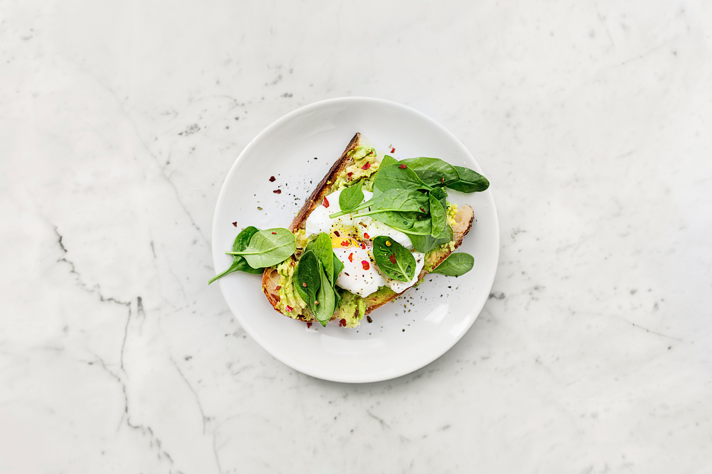
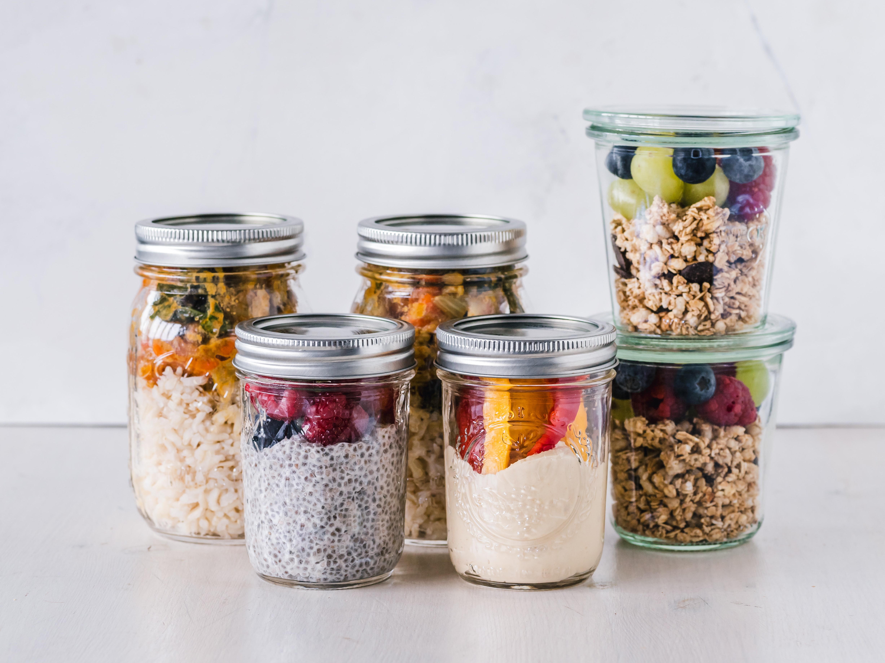
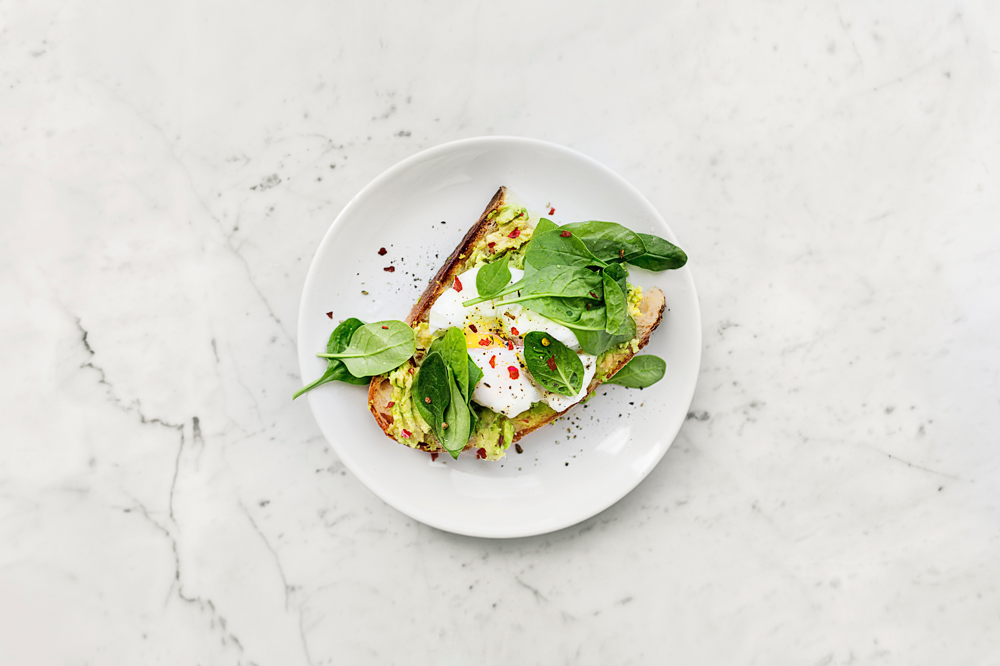
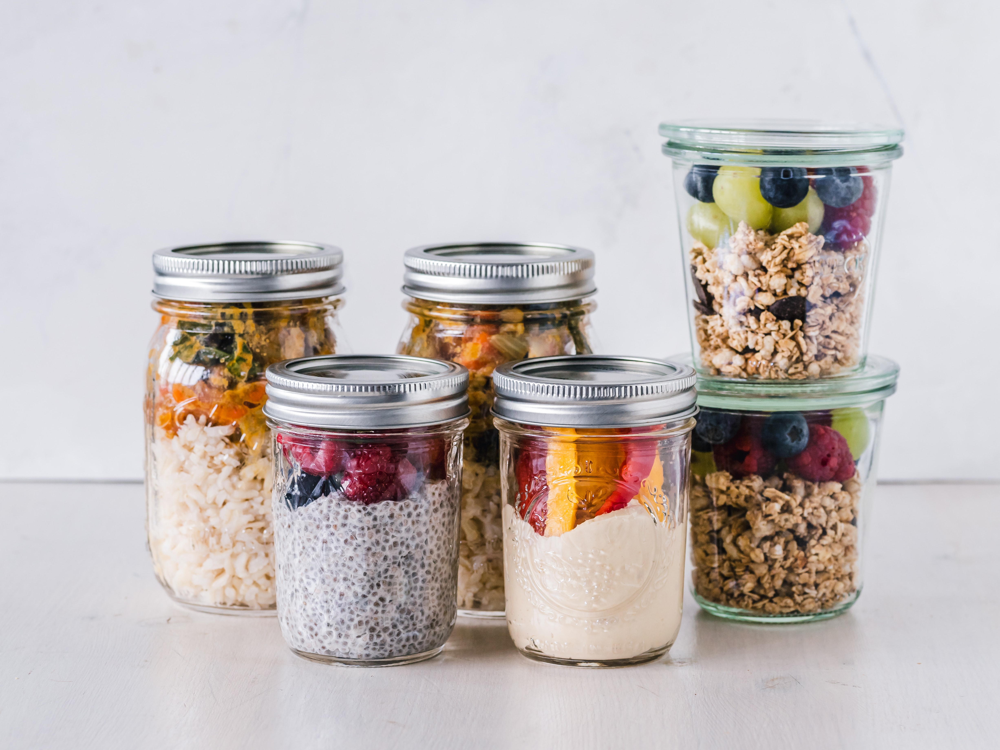

Tojás
Zöldbab
Spenót
Hüvelyesek
Levesek
Répa
Hagyma
Paradicsom
Édesburgonya
Brokkoli
Alma
Banán
A tojás, ahogy a zsírok is, ismét aranykorát éli. Újabb kutatások szerint egyikük sem felelős a koleszterinszint emelkedéséért (bár néhányan még mindig ezt hiszik), és a keringési zavarok előfordulásának gyakoriságáért sem felelősek. A tojás tökéletes étel, ha fogyni szeretnénk, mivel proteinben és egészséges zsírokban gazdag, eltelít miközben a kalóriatartalma viszonylag alacsony.
A, C, és K vitamint tartalma igen jelentős, illetve igen sok rost található meg benne. Kutatások szerint pedig a zöldbab csökkenti a szívbetegségek és a diabétesz kockázatát. A zöldbab jellemzően egy nyári zöldség, de az üzletekben elérhető bármikor fagyasztott, illetve konzerves formában. Többféleképpen is fogyasztható.
A tápanyag tartalmának köszönhetően a spenót számít az egyik legegészségesebb zöldségnek. Tartalmaz kálciumot, vasat és A, C, B9, K1 vitaminokat. Antioxidánsokban nagyon gazdag étel, ezért csökkenti a krónikus betegségek kialakulásának a lehetőségét, köztük a magas vérnyomásét is.
Gazdagok fehérjében és rostban, eltelítenek, és nem hizlalnak. Az egészséges vegetáriánus ételek között a lencsét és a vörös babot tartjuk számon, mivel rostban gazdagabbak a fehér babnál, de nincs ok arra sem, hogy a csicseriborsót kihagyjuk. A legfontosabb, hogy a hüvelyeseket zsiradék nélkül készítsük.
Minél nagyobb az élelmiszer térfogata a kalóriatartalmához képest, annál hatékonyabb lesz a fogyás. És az egyetlen dolog, ami nem hizlal, az a víz. Ezért, ha vizet adunk az ételünkhöz, akkor könnyebben lakhatunk jól ugyanannyi kalóriával.
A répa a legnagyobb A vitamint, és béta karotint tartalmazó zöldség, mely segít a egyes ráktípusok megelőzésében. A répa fogyasztása hozzájárul a kiegyensúlyozottabb emésztéshez, immunerősítő hatása van és nagyon jó a szem egészségének.
Nagyobb mennyiségben vannak benne jelen a C, B6, B9 vitaminok és a kálium. Fogyasztása segít a vércukorszint szabályozásában, és a csontok egészségének fenntartásában, továbbiakban pedig a rák kialakulásának kockázatát is csökkenti.
A paradicsomról a mai napig sem derült ki, hogy zöldség e, vagy inkább a gyümölcsök közé tartozik. Ez a piros növény egy igazi C vitamin, és kálium bomba, továbbá első osztályú rost forrás. A paradicsom segít a szívbetegségek, és a rák megelőzésében, ezen kívül a bőr egészségére is jó hatással van.
Kifejezetten ízletes ételnek számít, és egészségesebb a sima burgonyánál, mivel alacsonyabb a glikémiás indexe, és magasabb a rost tartalma, ami a belek megfelelő működését segíti. Nagyon sokféle vitamin lelehető fel benne, melyek többek között A, C, és B6 vitamin, továbbá nagyszerű forrása a béta karotinnak is. Segít szabályozni a vércukor szintet, illetve csökkenti a daganatok kialakulásának az esélyét.
A brokkoliban C, K1 vitaminokat, káliumot, vasat, és mangánt is magában hordoz. A brokkoli elősegíti a kisebb koleszterinszintet, és a szem egészségére is jó hatással van. A többi zöldségtől magasabb fehérjetartalmával tér el, ezért nagyon egészséges étel.
Gyakran hallani, hogy: minden nap egy alma és az orvost távol tartja. Ha jobban bele gondolunk, valóban van benne igazság, hiszen az almában magas a C vitamin és kálium tartalom, ezenkívül több fontos növényi vegyületet is magában foglal. Ezeknek az összetevőknek köszönhetően a vércukor szintet, illetve a 2-es típusú diabéteszt is kontrollálni képes, továbbá a szívbetegségek kialakulása ellen is véd.
Közkedvelt gyümölcs, melyet nem csak finom íze, de az egészségre gyakorolt pozitív hatásai miatt is sokan fogyasztanak. A banán legfőbb alkotóeleme a szénhidrát, és a rostok. Kifejezetten jó C, B6 vitaminforrás, és káliumban is gazdag. A magas antioxidáns tartalma által elősegíti a szívrendszer egészségét, illetve a bélrendszerre is jó hatással van a banán.
 


